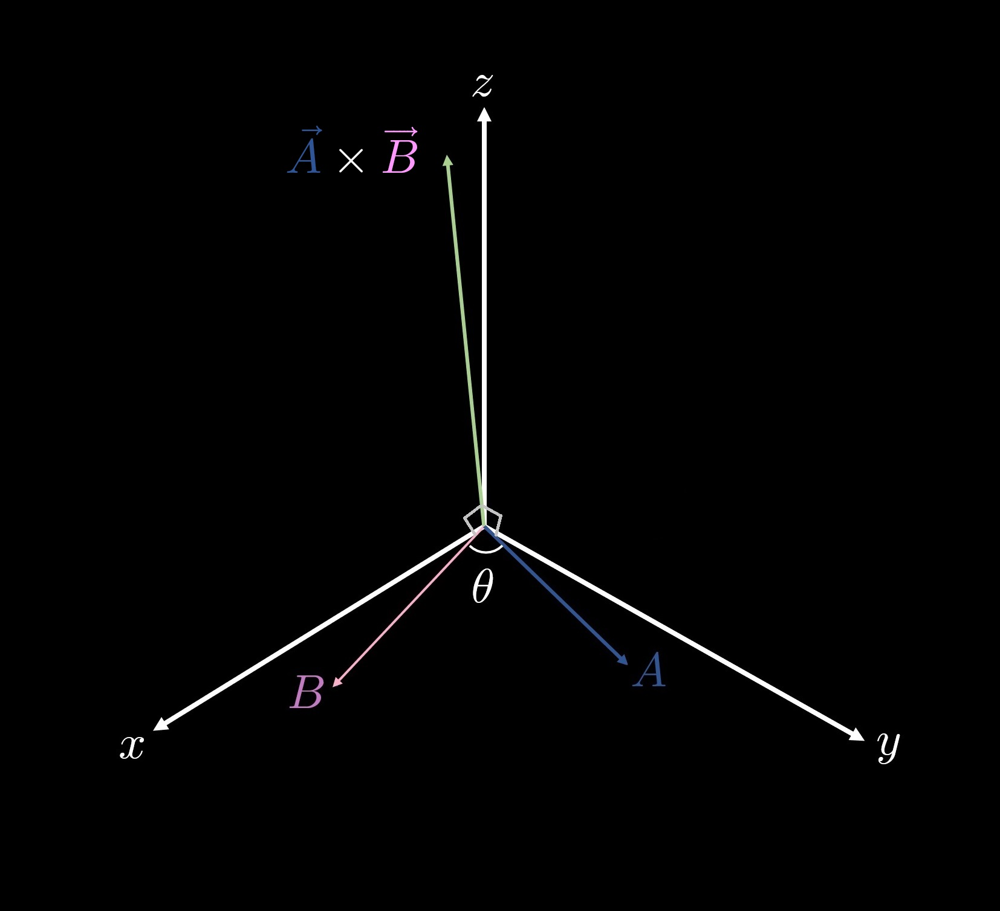
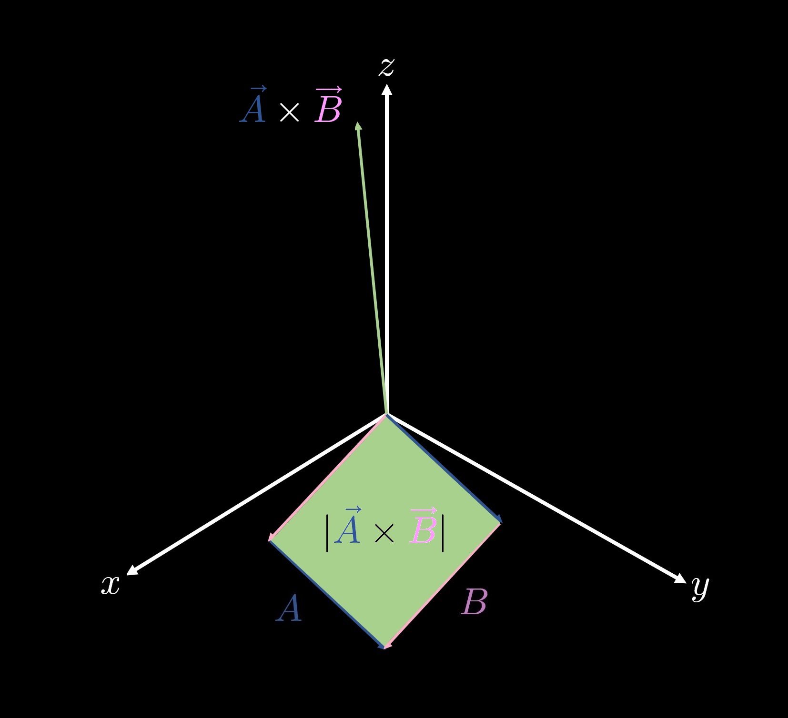
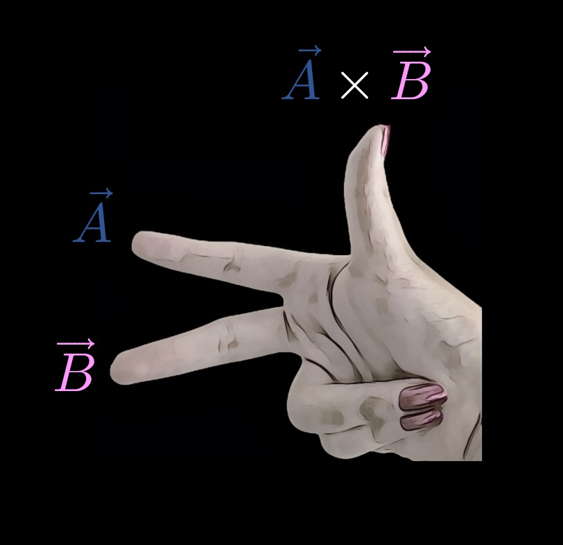

8.8 — The Cross Product
In this section we will discuss one of the operations for vector multiplication—the cross product. In section 8.7 we discussed the dot product, another operation for vector multiplication. Suppose that \(\vec{A}\) and \(\vec{B}\) are vectors in a three-dimensional space. The cross product is then denoted as $$\vec{A} \times \vec{B},$$ and unlike the dot product, which produces a scalar quantity, the cross product produces a vector orthogonal (forming right angles) to both \(\vec{A}\) and \(\vec{B}\). The magnitude of this orthogonal vector is given by $$ |\vec{A} \times \vec{B}| = |\vec{A}| |\vec{B}| \sin(\theta), $$ where \(\theta\) denotes the angle between \(\vec{A}\) and \(\vec{B}\).
The vector \(\vec{A} \times \vec{B}\) is orthogonal to vectors \(\vec{A}\) and \(\vec{B}\). (Attribution: own work)
Geometrically, the magnitude of the vector formed by the cross product \(\vec{A} \times \vec{B}\) represents the area of the parallelogram formed by lengths \(A\) and \(B\), as shown in the following figure.
A nice mnemonic device for finding the direction of the vector \(\vec{A} \times \vec{B}\) is the right-hand rule. Point your index finger in the direction of \(\vec{A}\) and your middle finger in the direction of \(\vec{B}\); your thumb will point in the direction of \(\vec{A} \times \vec{B}\).
Point your index finger in the direction of \(\vec{A}\) and your middle finger in the direction of \(\vec{B}\). Your thumb will point in the direction of \(\vec{A} \times \vec{B}\). (Attribution: own work)
An alternate way to compute cross products is with determinants. Suppose that vector \( \vec{A} \) has components {\(a_1, a_2, a_3\)} and that vector \(\vec{B}\) has components {\({b_1, b_2, b_3}\)}. The vector \(\vec{A} \times \vec{B}\) can be expressed with the determinant $$ \begin{vmatrix} \hat{i} & \hat{j} & \hat{k} \\ a_1 & a_2 & a_3 \\ b_1 & b_2 & b_3 \\ \end{vmatrix}, $$ which can be computed as $$ \begin{vmatrix} a_2 & a_3 \\ b_2 & b_3 \\ \end{vmatrix} \hat{i} - \begin{vmatrix} a_1 & a_3 \\ b_1 & b_3 \\ \end{vmatrix} \hat{j} + \begin{vmatrix} a_1 & a_2 \\ b_1 & b_2 \\ \end{vmatrix} \hat{k}= $$ $$ (a_2 b_3 - a_3 b_2) \hat{i} - (a_1 b_3 - a_3 b_1) \hat{j} + (a_1 b_2 - a_2 b_1) \hat{k}. $$
Let \(\vec{A} = \left\langle 3, 4, -6 \right\rangle\) and let \(\vec{B} = \left\langle -1, 3, 9 \right\rangle \). Find the vector components of \(\vec{A} \times \vec{B}\) and its magnitude.
The vector components of \(\vec{A} \times \vec{B}\) can be found with the determinant $$ \begin{vmatrix} \hat{i} & \hat{j} & \hat{k} \\ 3 & 4 & -6 \\ -1 & 3 & 9 \\ \end{vmatrix} $$ $$ = \begin{vmatrix} 4 & -6 \\ 3 & 9 \\ \end{vmatrix} \hat{i} - \begin{vmatrix} 3 & -6 \\ -1 & 9 \\ \end{vmatrix} \hat{j} + \begin{vmatrix} 3 & 4 \\ -1 & 3 \\ \end{vmatrix} \hat{k} $$ $$ = 54 \hat{i} - 21 \hat{j} + 13 \hat{k}. $$ The magnitude of this vector can be found by evaluating $$ \sqrt{(54)^2 + (-21)^2 + (13)^2} = \sqrt{3526}. $$
Let \(\vec{A} = \left\langle 3, 4, -6 \right\rangle\) and let \(\vec{B} = \left\langle -1, 3, 9 \right\rangle \). Find the vector components of \(\vec{A} \times \vec{B}\) and its magnitude.